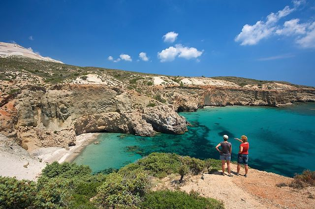

S'amuser à la Grecque : Activités et Loisirs
Bienvenue dans le monde des activités en Grèce, où chaque coin de ce pays ensoleillé offre une aventure unique.
Que vous soyez un amateur de sports nautiques, un explorateur intrépide ou un amoureux de la culture, la Grèce a quelque chose à offrir pour tous les goûts.
Plongée dans les Eaux Cristallines
Explorez le monde sous-marin de la Grèce, riche en biodiversité et en sites de plongée captivants. Des eaux cristallines de la mer Égée aux grottes sous-marines de la mer Ionienne, plongez dans une expérience inoubliable.
Les amateurs de plongée apprécieront les récifs coralliens colorés, les épaves antiques et la vie marine abondante.

Randonnée à Travers les Paysages Époustouflants

La Grèce offre des possibilités infinies pour les amateurs de randonnée. Parcourez les sentiers escarpés des montagnes du Péloponnèse, découvrez les gorges impressionnantes de la Crète, ou explorez les sentiers côtiers offrant des vues panoramiques spectaculaires.
Chaque randonnée est une aventure à travers des paysages à couper le souffle.
Marchés Locaux et Découvertes Culinaires

Imprégnez-vous de l'ambiance locale en explorant les marchés traditionnels. Goûtez aux saveurs authentiques des produits locaux, des fromages aux olives, en passant par les fruits et les épices. C'est une occasion parfaite de découvrir la diversité culinaire de la Grèce et de rencontrer les artisans passionnés.
Que vous soyez à la recherche d'adrénaline, de détente ou d'exploration culturelle, la Grèce vous offre une palette d'activités et de loisirs qui enrichiront votre voyage. Préparez-vous à vivre des expériences uniques qui resteront gravées dans votre mémoire.